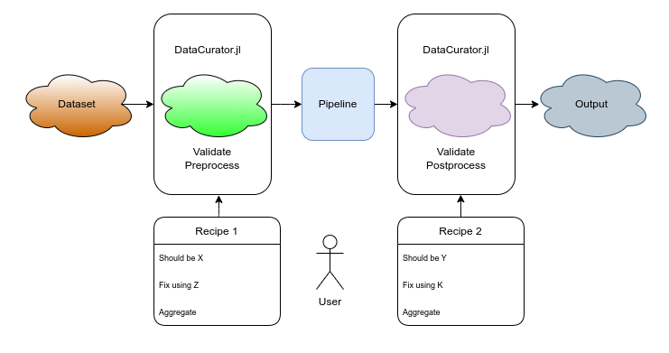

DataCurator.jl Documentation
A multithreaded package to validate, curate, and transform large heterogeneous datasets using reproducible recipes, which can be created both in TOML human readable format, or in Julia.

DataCurator is a Swiss army knife that ensures:
- pipelines can focus on the algorithm/problem solving
- human readable
recipesfor future reproducibility - validation huge datasets at high speed
- out-of-the-box operation without the need for code or dependencies

Quickstart
We'll show 2 simple examples on how to get started, for a more complete manual please see individual sections in the left pane.
Validate
Check that a directory only contains CSV files, list them in a file, and list any file that's incorrect.
[global]
inputdirectory = "testdir"
[any]
conditions=["is_csv_file"]
actions = [["log_to_file", "non_csvs.txt"]]
counter_actions=[["log_to_file", "csvs.txt"]]Execute:
./DataCurator.sif -r myrecipe.tomlCurate
Flatten all .txt files, flatten refers to extracting all files from a nested hierarchy (a directory with many subdirectories, each with their own subdirectories and so forth) into 1 single set of files in 1 directory, for ease of processing.
Create a recipe.toml file with:
[global]
act_on_success = true
inputdirectory = "testdir"
regex=true
[any]
all=true
conditions = ["isfile", ["endswith", ".*.txt"]]
actions = [["flatten_to", "outdir"]]./DataCurator.sif -r myrecipe.tomlA more complex example
In full_api.toml you can see an example of how you can specify an entire image processing pipeline with a simple recipe.
...
actions=[
{name_transform=["tolowercase"],
content_transform=[
["slice_image", [1,2],[[20,50],[20,50]]],
["gaussian", 3],
"laplacian",
["threshold_image", "abs <", 0.01],
["apply_to_image", ["abs"]],
["apply_to_image", ["log"]]
"otsu_threshold_image",
"erode_image"
],
mode="copy"}
]
...